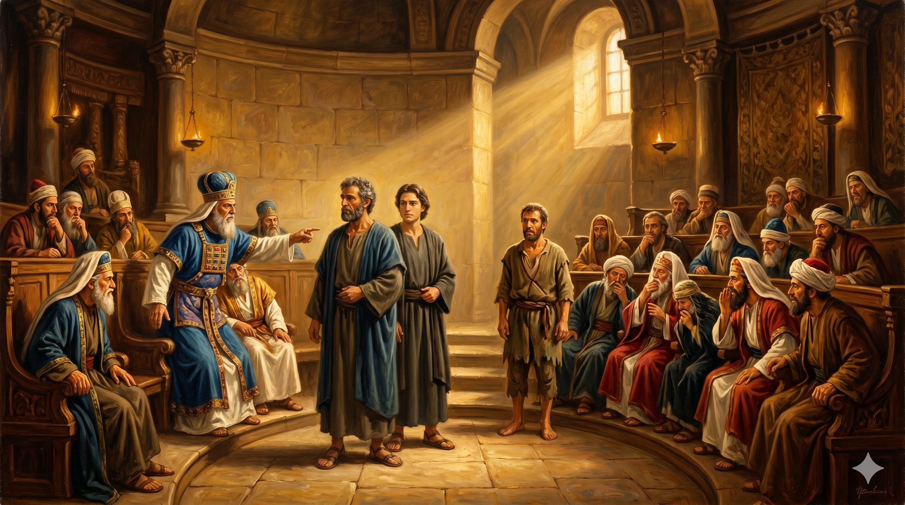

공회 앞에서 담대하게 서 있는 베드로와 요한 — 학문 없는 어부에게서 흘러나오는 성령의 권위
"베드로와 요한이 대답하여 이르되 하나님 앞에서 너희의 말을 듣는 것이 하나님의 말씀을 듣는 것보다 옳은가 판단하라. 우리는 보고 들은 것을 말하지 아니할 수 없다 하니" — 사도행전 4:19–20
미문의 앉은뱅이가 치유된 다음 날, 베드로와 요한은 대제사장과 장로들, 그리고 율법 교사들로 구성된 산헤드린 공회 앞에 끌려왔습니다. 이 공회는 당시 유대 사회의 최고 권력 기관이었으며, 예수를 십자가에 못 박는 데 앞장섰던 바로 그 기관이었습니다. 불과 두 달 전만 해도 베드로는 이 세력 앞에서 예수를 세 번이나 부인했지만, 이제 그는 같은 세력 앞에 다시 섰습니다.
공회가 베드로에게 "무슨 권세와 누구의 이름으로 이 일을 행하였느냐"고 심문하자, 베드로는 성령이 충만하여 담대하게 선포했습니다. "너희가 십자가에 못 박고 하나님이 죽은 자 가운데서 살리신 나사렛 예수 그리스도의 이름으로 이 사람이 건강하게 되어 너희 앞에 섰느니라"(행 4:10). 그 자리에 치유받은 사람이 함께 서 있었기에 공회는 아무 반박도 할 수 없었습니다. 성령이 살아있는 증거를 함께 세우신 것입니다. 공회원들은 이 평범한 어부들에게서 흘러나오는 능력과 담대함을 보며 "이들이 예수와 함께 있던 자"임을 인식하게 되었습니다.

산헤드린 공회가 베드로와 요한에게 "더 이상 예수 이름으로 말하지 말라" 명령하는 장면
공회는 베드로와 요한에게 "다시는 예수의 이름으로 말하거나 가르치지 말라"고 엄중히 경고했습니다. 이에 두 사도는 두려워하거나 타협하지 않고, 오히려 "하나님 앞에서 너희의 말을 듣는 것이 옳은가 판단하라"고 맞받아쳤습니다. 이 담대함은 어디서 왔을까요? 바로 그들이 직접 '보고 들은 것'에서 왔습니다. 예수께서 병자를 고치시는 것을 눈으로 보았고, 부활하신 주님을 만났으며, 성령이 임하는 것을 몸으로 체험했습니다. 개인적 체험과 확신이 있는 사람은 위협 앞에서도 흔들리지 않습니다.
우리의 신앙도 남에게 전해 들은 이야기가 아니라, 우리가 직접 경험한 하나님의 은혜 위에 세워져야 합니다. 내 삶 속에서 하나님이 역사하신 순간들, 응답받은 기도, 변화된 성품, 위기 속에서 함께하신 손길 — 이것이 바로 내가 "말하지 아니할 수 없는" 간증입니다. 오늘 나는 어떤 이야기를 품고 있습니까? 그 이야기를 누구에게 나눌 수 있겠습니까?
"말하지 않을 수 없다" — 이것이 진정한 신앙의 온도입니다.
사람의 눈치가 두려워 침묵을 선택할 때,
베드로의 고백을 기억하십시오.
우리는 보고 들은 것을 말해야 하는 증인입니다.